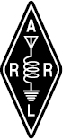

About the ARRL
The seed for Amateur Radio was planted in the 1890s, when Guglielmo Marconi began his experiments in wireless telegraphy. Soon he was joined by dozens, then hundreds, of others who were enthusiastic about sending and receiving messages through the air — some with a commercial interest, but others solely out of a love for this new communications medium. The United States government began licensing Amateur Radio operators in 1912.
By 1914, there were thousands of Amateur Radio operators — hams — in the United States. Hiram Percy Maxim, a leading Hartford, Connecticut inventor and industrialist, saw the need for an organization to unify this fledgling group of radio experimenters. In May 1914 he founded the American Radio Relay League (ARRL) to meet that need.
ARRL is the national association for Amateur Radio in the US. Today, with approximately 167,000 members, ARRL numbers within its ranks the vast majority of active radio amateurs in the nation and has a proud history of achievement as the standard-bearer in amateur affairs. ARRL’s underpinnings as Amateur Radio’s witness, partner, and forum are defined by five pillars: Public Service, Advocacy, Education, Technology, and Membership. ARRL is also International Secretariat for the International Amateur Radio Union, which is made up of similar societies in 150 countries around the world.
ARRL’s Mission Statement: To advance the art, science, and enjoyment of Amateur Radio.
ARRL’s Vision Statement: As the national association for Amateur Radio in the United States, ARRL:
• Supports the awareness and growth of Amateur Radio worldwide;
• Advocates for meaningful access to radio spectrum;
• Strives for every member to get involved, get active, and get on the air;
• Encourages radio experimentation and, through its members, advances radio technology and education;
and
• Organizes and trains volunteers to serve their communities by providing public service and emergency communications.
At ARRL headquarters in the Hartford, Connecticut suburb of Newington, the staff helps serve the needs of members. ARRL publishes the monthly journal QST and an interactive digital version of QST, as well as newsletters and many publications covering all aspects of Amateur Radio. Its headquarters station, W1AW, transmits bulletins of interest to radio amateurs and Morse code practice sessions. ARRL also coordinates an extensive field organization, which includes volunteers who provide technical information and other support services for radio amateurs as well as communications for public service activities. In addition, ARRL represents US radio amateurs to the Federal Communications Commission and other government agencies in the US and abroad.
Membership in ARRL means much more than receiving QST each month. In addition to the services already described, ARRL offers membership services on a personal level, such as the Technical Information Service, where members can get answers — by phone, e-mail, or the ARRL website — to all their technical and operating questions.
A bona fide interest in Amateur Radio is the only essential qualification of membership; an Amateur Radio license is not a prerequisite, although full voting membership is granted only to licensed radio amateurs in the US. Full ARRL membership gives you a voice in how the affairs of the organization are governed. ARRL policy is set by a Board of Directors (one from each of 15 Divisions). Each year, one-third of the ARRL Board of Directors stands for election by the full members they represent. The day-to-day operation of ARRL HQ is managed by a Chief Executive Officer and his/her staff.
Join ARRL Today! No matter what aspect of Amateur Radio attracts you, ARRL membership is relevant and important. There would be no Amateur Radio as we know it today were it not for ARRL. We would be happy to welcome you as a member! Join online at www.arrl.org/join. For more information about ARRL and answers to any questions you may have about Amateur Radio, write or call:
 |
ARRL — The national association for Amateur Radio® 225 Main Street Newington CT 06111-1494 Tel: 860-594-0200 FAX: 860-594-0259 e-mail: hq@arrl.org Prospective new radio amateurs call (toll-free): 800-32-NEW HAM (800-326-3942) You can also contact ARRL via e-mail at newham@arrl.org or check out the ARRL website at www.arrl.org |